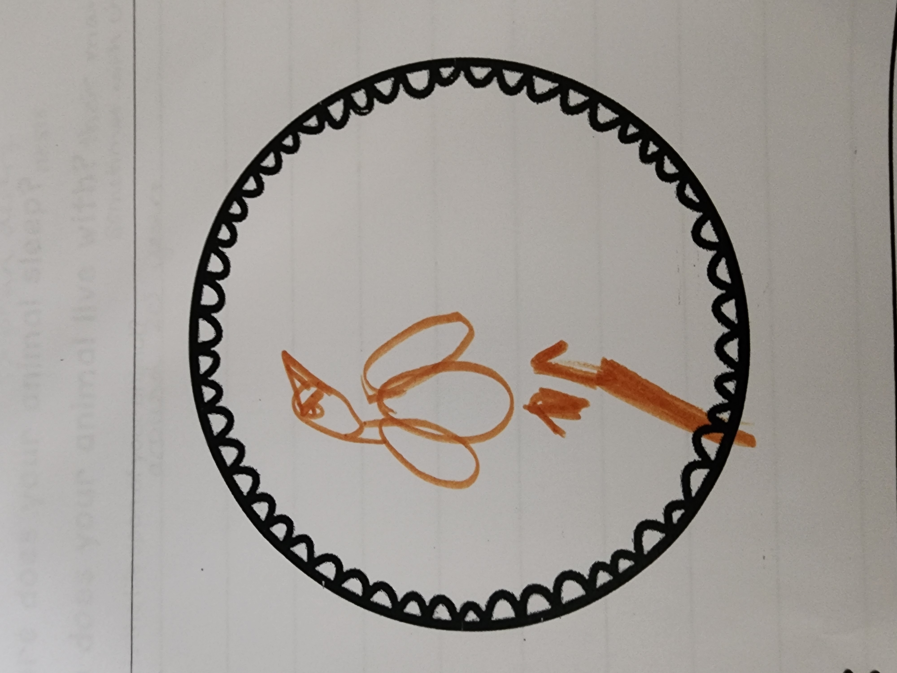

Welcome! Here’s my hand-drawn bald eagle:
Drawing of a bald eagle by Oliver Atkin
Habitat Notes
Where on the earth does your animal live?
My bald eagle lives in the Sonoran Desert near rivers and lakes where there’s water. This is a special place with cactuses and mountains!
Where does my animal sleep?
My bald eagle sleeps in nests made of sticks up high in tall trees or on cliffs. They build these nests to stay safe from danger.
Who does my animal live with?
My bald eagle lives with their mates, who are their special eagle friends. Sometimes they also live with their baby chicks in the nest!
What is the life span of my animal?
My bald eagle can live for around 30 years if it stays healthy. That’s a really long time for a bird in the Sonoran Desert!
Created by Oliver Atkin for Miss Carillo's 1st grade class
Back to TopMy Animal: The Bald Eagle

Here is a video of the bald eagle's call:
Photo from 10000birds.com
Created by Oliver Atkin for Miss Carillo's 1st grade class
Back to TopDiet Notes
What does my animal eat?
My bald eagle eats fish, other birds, small animals, and sometimes dead animals it finds. In the Sonoran Desert, it likes to catch fish from the rivers!
How do they get their food?
My bald eagle gets its food by hunting with its sharp beaks and strong claws. It flies high and swoops down to grab its dinner!
How often do they eat?
My bald eagle eats every day to stay strong and healthy. It needs lots of food to fly and take care of its babies!
Created by Oliver Atkin for Miss Carillo's 1st grade class
Back to TopPredators Notes
What animals hunt my animal for prey?
No animals hunt my bald eagle for prey because it’s so big and strong. Even in the Sonoran Desert, it’s the boss of the sky!
How does my animal avoid the predators?
My bald eagle doesn’t have to avoid predators because nothing tries to catch it. It stays safe by flying high where no one can reach it!
Created by Oliver Atkin for Miss Carillo's 1st grade class
Back to TopLife Cycle Notes
What is my animal called as a baby?
My bald eagle is called an eaglet when it’s a baby. Eaglets are fluffy and cute when they hatch!
Does my animal lay eggs?
Yes, my bald eagle lays eggs in its nest in the Sonoran Desert. The eggs are big and white, and the parents keep them warm!
Who raises the babies?
Mom and Dad eagles raise the babies together. They bring food and protect the eaglets until they can fly!
Created by Oliver Atkin for Miss Carillo's 1st grade class
Back to TopFun Facts
What makes my animal unique?
My bald eagle is unique because it can catch prey with its super strong talons. It grabs fish right out of the water in the Sonoran Desert!
What is the coolest thing you learned about my animal?
The coolest thing I learned is that my bald eagle has huge wings to fly far. Its wings help it soar over the desert like a superhero!
Created by Oliver Atkin for Miss Carillo's 1st grade class
Back to Top